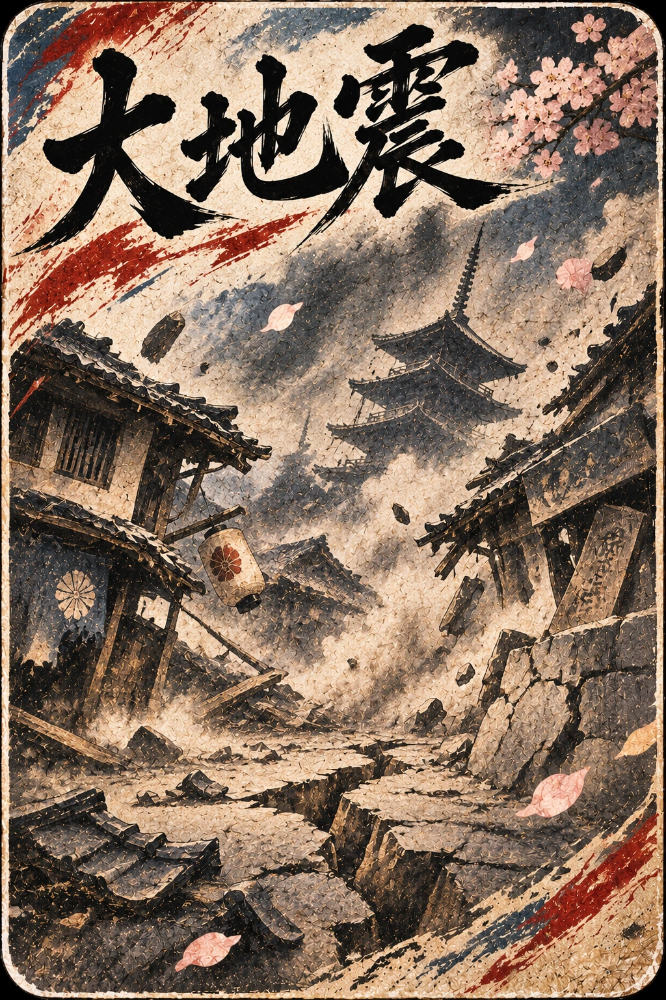
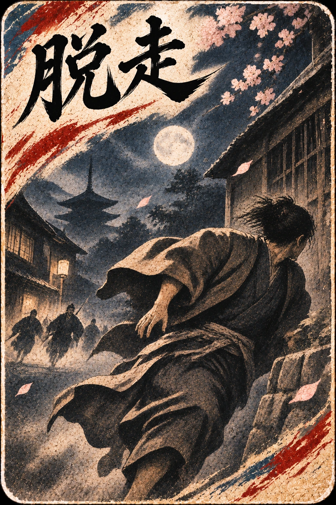
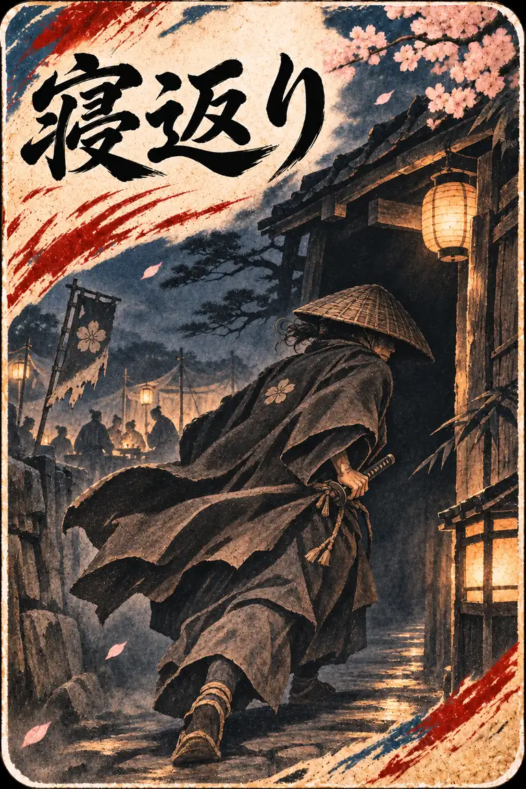

遊び方
基本はいつもの将棋。けれど幕末の戦場では、事件札によって運命が大きく動く。
一、はじめての一局
- タイトルで「AI対戦」または「二人対戦」を選びます。初めてならAI「初級」がおすすめです。
- 「いざ、出陣」を押し、自分の駒をタップします。
- 色が付いた移動先をタップして一手指します。相手の駒を取ると、通常は自分の持ち駒になります。
- 持ち駒は盤の空いているマスに打てます。敵陣に入ると成れる駒もあります。
通常対局は9×9の盤です。駒の動き・成り・反則を初めから知りたい方は、図付きの将棋の基本ルールを参照してください。
二、幕末の事件札
通常対局の新選組将棋モードでは、各陣営の4手番ごとに事件札が現れます。札をタップして表を見て、もう一度タップすると効果が発動します。札をめくること自体では手番を消費しません。



- 大地震盤上が揺れ、一部の駒が移動。ひび割れたマスが崩落し、しばらく進入できないことも。
- 脱走隊士が震えながら盤上から走り去ります。駒は持ち駒になりません。
- 粛清対象となった味方の隊士が盤面から消えます。血しぶきの演出があります。
- 寝返り敵の隊士が寝返り、自分の持ち駒に加わることがあります。
- 何事もなし事件は発生せず、そのまま対局を続行します。
章ごとに援軍・武器などの特別な演出も登場します。事件や運命はゲーム独自の創作演出であり、実際の幕末史をそのまま再現するものではありません。
三、人斬りと主君
 一人の隊士が敵駒を3枚捕らえると覚醒。実際のゲームで表示される筆文字です。
一人の隊士が敵駒を3枚捕らえると覚醒。実際のゲームで表示される筆文字です。人斬り同じ隊士が敵駒を3枚捕縛すると「人斬り覚醒」。次の捕縛で相手の駒を斬り捨て、持ち駒には加えません。発動後は通常に戻ります。
主君を見捨てる新選組将棋では王手を受けたとき、防がず別の駒を動かすこともできます。ただし警告が表示され、次の手で玉を討ち取られれば敗北です。これは通常将棋にはない創作ルールです。
四、人物コレクションと保存
相手の人物駒を取ると、その人物のカードを獲得できます。全104名の肖像と略歴を図鑑で見られます。獲得状況は使用中のブラウザ内に保存されます。
対局の保存について：ストーリーモードには対局を保存・再開する機能があります。通常対局には、現行画面で途中保存・再開の操作はありません。人物カードの収集状況と対局の進行状況は別のものです。同じ端末・同じブラウザでご利用ください。
五、遊び方を選ぶ
- AI対戦 — 初級・中級・上級から強さを選べます。
- 二人対戦 — 1台のスマホを縦に置き、向かい合って交互に指します。相手側の表示は反対向きになります。
- 新選組将棋（全要素ON） — 事件・脱走・人斬りを含む推奨設定。
- カスタム対局 — 好きな特殊ルールを個別にON/OFF。
- 通常将棋 — 特殊事件や王を見捨てるルールなし。通常の将棋ルールで対局します。
スマホの全画面表示は端末・ブラウザの対応状況によって異なります。iPhoneの場合はSafariからホーム画面に追加するとアプリ風に起動できます。
六、幕末物語（ストーリーモード）
全4章を順番に戦います。盤の大きさや使われる演出は章によって異なります。
- 池田屋事件：5×6の小さな盤で戦います。
- 禁門の変：9×9の盤で戦います。
- 油小路事件：5×6の小さな盤で戦います。
- 鳥羽・伏見の戦い：9×9の盤。大砲と鉄砲を両軍が各1回使用します。
援軍：章ごとの演出で味方・敵の駒が増えたり、事件札によって離脱した隊士が持ち駒に戻ったりすることがあります。
大砲：敵陣の2か所に着弾。命中した駒は消え、着弾したマスは3手番の間使用できません。鉄砲：発射方向で最初に当たった駒が消えます。駒に当たらない場合もあります。
ストーリー中の「遊び方」から、その章の操作説明も確認できます。